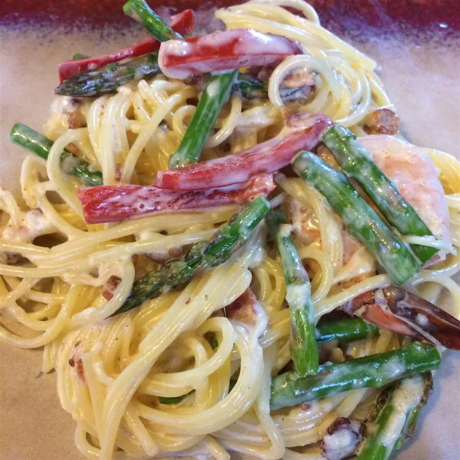

Fettucine Carbonara
Easy and delicious Fettucine Carbonara

Prep time
25 minutes
Cook time
2 minutes
Additional time
3 minutes
Total time
30 minutes
Servings
8 servings
Ingredients
- 1 pound dry fettucine noodles
- 8 slices of bacon
- 4 eggs
- 1 and 1 quarter cup parmesan cheese
- 1 and 1 quarter cup hevy cream
- black pepper to taste
Cooking Directions
Step One
- Bring a large pot of lightly salted water to a boil.
Add fettucine and cook for 8 to 10 minutes or until al dente.
then drain.
Step Two
- Fry bacon in a skillet over medium heat until crispy,
remove asnd drain on paper towel.Chop with knife into bits.
Step Three
- Beat the eggs,cheese and cream in a bowl.
then add the bacon.
Pour over the pasta in the pan and toss gently using tongs.
Steo Four
-
Return the pan to a very low heat and cook for 1 to 2 minutes,
or until slightly thickened.
Don't overheat or the eggs will scramble.
Season well with black pepper and serve.
Nutrition Facts,per serving
- Calories: 439
- Fat: 23g
- Carbs: 43g
- Protein: 17g